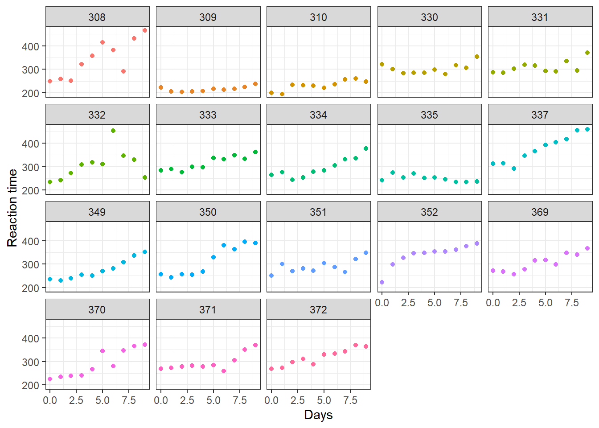

6 Aplicación con lme4
En este capítulo se mostrará como usar el paquete lme4 para la aplicación de modelos mixtos con la base de datos sleepstudy del mismo paquete.
A continuación la base de datos a utilizar.
## Reaction Days Subject
## 1 249.5600 0 308
## 2 258.7047 1 308
## 3 250.8006 2 308
## 4 321.4398 3 308
## 5 356.8519 4 308
## 6 414.6901 5 308Esta base de datos sobre el tiempo de reacción promedio por día para un conjunto de individuos, en un estudio de privación del sueño, contiene la información sobre el tiempo de reacción promedio (Reaction), el número de días de privación del sueño (Days), donde el día 0 corresponde al día en el que los indiviuos tenían su cantidad normal de sueño, y el número del individuo (en total 18) sobre el que se realizó la observación (Subject). A partir del día 0, hubo una restricción en cada individuo a 3 horas de sueño por noche.
library(ggplot2)
ggplot(data = sleepstudy, aes(x = Days, y = Reaction, color = Subject)) +
geom_point() +
theme_bw() +
facet_wrap(~ Subject) + labs(y = "Reaction time") +
theme(legend.position = "none")
De la figura anterior vemos que el tiempo de reacción promedio, tanto en el día 0 como en los siguientes días de prueba (del día 1 al día 9), son distintos en cada uno de los individuos. Esta situación conlleva a probar la hipótesis de que el tiempo de reacción promedio en una serie de pruebas varía según los individuos. Esto es, ajustar un modelo donde el intercepto y la pendiente se consideran como efectos aleatorios.
Un modelo lineal mixto que describe la anterior situación se puede escribir como:
\[\begin{align*} Reaction_{ij} | b_0, b_1 &\sim N(\mu_{ij}, \sigma^2_{Reaction}) \\ \mu_{ij} &= \beta_0 + \beta_1 Days_{ij} + b_{0i} + b_{1i} Days_{ij} \\ \left ( \begin{matrix} b_{0} \\ b_{1} \end{matrix} \right ) &\sim N\left ( \left [ \begin{matrix} 0 \\ 0 \end{matrix} \right ], \left [ \begin{matrix} \sigma^2_{b0} & \sigma_{b01} \\ \sigma_{b01} & \sigma^2_{b1} \end{matrix} \right ] \right ) \end{align*}\]
Aquí, los individuos (\(i\)) varían en el tiempo de reacción promedio tanto en su intercepto (\(b_{0i}\)) como en su pendiente (\(b_{1i}\)), que en conjunto componen la varianza total en dicho tiempo atribuible a la variación entre individuos. Esta contribución individual se cuantifica usando un modelo de intercepto y pendiente aleatoria con distribución normal (\(N\)). La variación entre individuos en intercepto y pendiente es \(\sigma^2_{b0}\) y \(\sigma^2_{b1}\), respectivamente. La covarianza entre el intercepto y la pendiente esta dada por \(\sigma_{b01}\).
El vector de parámetros para este modelo sería \(\boldsymbol{\Theta}=(\beta_0, \beta_1, \sigma_{reaction}, \sigma_{b0}, \sigma_{b1}, \sigma_{b0b1})^\top\).
Para ajustar el modelo de intercepto y pendiente aleatoria planteado usando el paquete lme4 podemos usar el siguiente código:
Para obtener la tabla de resumen usamos:
## Linear mixed model fit by REML ['lmerMod']
## Formula: Reaction ~ Days + (Days | Subject)
## Data: sleepstudy
##
## REML criterion at convergence: 1743.6
##
## Scaled residuals:
## Min 1Q Median 3Q Max
## -3.9536 -0.4634 0.0231 0.4634 5.1793
##
## Random effects:
## Groups Name Variance Std.Dev. Corr
## Subject (Intercept) 612.10 24.741
## Days 35.07 5.922 0.07
## Residual 654.94 25.592
## Number of obs: 180, groups: Subject, 18
##
## Fixed effects:
## Estimate Std. Error t value
## (Intercept) 251.405 6.825 36.838
## Days 10.467 1.546 6.771
##
## Correlation of Fixed Effects:
## (Intr)
## Days -0.138De la salida anterior se obtienen los siguientes parámetros estimados
\[ \hat{\boldsymbol{\Theta}} = (\hat{\beta_0}=251.40, \hat{\beta_1}=10.47, \hat{\sigma}_{reaction}=25.59, \hat{\sigma}_{b0}=24.74, \hat{\sigma}_{b1}=5.92, \hat{\sigma}_{b0b1}=10.25)^\top \]
El último parámetro estimado se obtiene utilizando la ecuación de correlación que relaciona la correlación, la covarianza y las desviaciones de los efectos aleatorios: \(\rho_{b0b1} = \sigma_{b0b1}/(\sigma_{b0} \times \sigma_{b1})\)
Usando la información anterior se puede escribir el modelo ajustado de la siguiente manera:
\[\begin{align*} Reaction_{ij} &\sim N(\hat{\mu}_{ij}, 25.59^2) \\ \hat{\mu}_{ij} &= 251.40 + 10.47 Days_{ij} + \tilde{b}_{0i} + \tilde{b}_{1i} Days_{ij} \\ \left ( \begin{matrix} b_{0} \\ b_{1} \end{matrix} \right ) &\sim N\left ( \left [ \begin{matrix} 0 \\ 0 \end{matrix} \right ], \left [ \begin{matrix} 24.74^2 & 10.25 \\ 10.25 & 5.92^2 \end{matrix} \right ] \right ) \end{align*}\]
Los elementos \(b_{0i}\) y \(b_{1i}\) se deben substituir por sus respectivas predicciones \(\tilde{b}_{0i}\) y \(\tilde{b}_{1i}\) y se pueden obtener del modelo ajustado de esta forma:
## $Subject
## (Intercept) Days
## 308 2.2585509 9.1989758
## 309 -40.3987381 -8.6196806
## 310 -38.9604090 -5.4488565
## 330 23.6906196 -4.8143503
## 331 22.2603126 -3.0699116
## 332 9.0395679 -0.2721770
## 333 16.8405086 -0.2236361
## 334 -7.2326151 1.0745816
## 335 -0.3336684 -10.7521652
## 337 34.8904868 8.6282652
## 349 -25.2102286 1.1734322
## 350 -13.0700342 6.6142178
## 351 4.5778642 -3.0152621
## 352 20.8636782 3.5360011
## 369 3.2754656 0.8722149
## 370 -25.6129993 4.8224850
## 371 0.8070461 -0.9881562
## 372 12.3145921 1.2840221
##
## with conditional variances for "Subject"Y los valores de los efectos fijos estimados se pueden obtener así:
## (Intercept) Days
## 251.40510 10.46729Con base en la información anterior de efectos aleatorios y fijos, es posible escribir la ecuación del modelo para cada individuo. Para esto, se debe considerar los efectos fijos estimados (\(\hat{\beta}_0 \approx 251.40\) y \(\hat{\beta}_1\approx 10.47\)) y los efectos aleatorios de cada uno de los individuos (por ejemplo para el individuo 308, \(\tilde{b}_{0, i=308} \approx 2.26\) y \(\tilde{b}_{1, i=308} \approx 9.20\)). Así, el valor medio del individuo 308 se calcula como:
\[\begin{align*} \hat{\mu}_{i=308, j} &= \hat{\beta}_0 + \hat{\beta}_1 \, Days_{i=308, j} + \tilde{b}_{0, i=308} + \tilde{b}_{1, i=308} \, Days_{i=308, j} \\ \hat{\mu}_{i=308, j} &= 251.40 + 10.47 \, Days_{i=308, j} + 2.26 + 9.20 \, Days_{i=308, j} \\ \hat{\mu}_{i=308, j} &= 253.66 + 19.67 \, Days_{i=308, j} \end{align*}\]
Lo anterior se puede resumir en el siguiente modelo.
\[\begin{align*} Reaction_{i=308, j} &\sim N(\hat{\mu}_{i=308, j}, \hat{\sigma}^2_{Reaction}) \\ \hat{\mu}_{i=308, j} &= 253.66 + 19.67 \, Days_{i=308, j} \\ \hat{\sigma}_{Reaction} &= 25.59 \end{align*}\]
Los efectos fijos y aleatorios de la expresión anterior para cada uno de los individuos se pueden obtener con R de la siguiente forma:
## $Subject
## (Intercept) Days
## 308 253.6637 19.6662617
## 309 211.0064 1.8476053
## 310 212.4447 5.0184295
## 330 275.0957 5.6529356
## 331 273.6654 7.3973743
## 332 260.4447 10.1951090
## 333 268.2456 10.2436499
## 334 244.1725 11.5418676
## 335 251.0714 -0.2848792
## 337 286.2956 19.0955511
## 349 226.1949 11.6407181
## 350 238.3351 17.0815038
## 351 255.9830 7.4520239
## 352 272.2688 14.0032871
## 369 254.6806 11.3395008
## 370 225.7921 15.2897709
## 371 252.2122 9.4791297
## 372 263.7197 11.7513080
##
## attr(,"class")
## [1] "coef.mer"A continuación usted podrá observar el diagrama de dispersión mostrado al inicio de este capitulo con la recta de regresión para cada individuo. El código de R para obtener esto se presenta a continuación:
fit <- lmer(Reaction ~ Days + (Days | Subject), REML = TRUE, data = sleepstudy)
sleepstudy$pred_inter_pend_aleatorio <- predict(fit)
ggplot(data = sleepstudy, aes(x = Days, y = pred_inter_pend_aleatorio, color = Subject)) +
geom_line() +
geom_point(aes(x = Days, y = Reaction, color = Subject)) +
geom_abline(intercept = 251.40, slope = 10.47, color = "black", linetype = "dashed", linewidth = 0.5) +
theme_bw() +
facet_wrap(~ Subject) +
theme(legend.position = "none") + labs(y = "Reaction time")
La figura anterior corresponde a un modelo de intercepto y pendiente aleatoria, en el que se permite que tanto los interceptos como las pendientes varíen según los individuos. Las líneas continuas corresponde a la recta de regresión ajustada a los datos. Los puntos representan las observaciones (tiempo de reacción promedio por día) medidas en cada uno de los individuos. La línea negra discontinua representa el valor medio global de la distribución de los efectos aleatorios.
A continuación usted encontrará una figura con cuatro páneles donde se muestran los resultados de cuatro modelos distintos, entre ellos el modelo mixto con intercepto y pendiente aleatoria del ejemplo anterior. Con base en estas figuras, responda las preguntas siguientes.
## Warning: Using `size` aesthetic for lines was deprecated in ggplot2 3.4.0.
## ℹ Please use `linewidth` instead.
## This warning is displayed once every 8 hours.
## Call `lifecycle::last_lifecycle_warnings()` to see where this warning was generated.
Ejercicios
Ajuste el modelo con intercepto aleatorio mostrado en el panel 2. ¿Qué opina de este modelo?
Ajuste el modelo con pendiente aleatoria presentado en el panel 3. ¿Qué opina de este modelo?
Ajustar solo un intercepto aleatorio permite que los individuos varíen asumiendo que los mismos tienen una pendiente común (panel 2). Al ajustar solo una pendiente aleatoria (panel 3) permite que la pendiente de un predictor varíe en función de los individuos (la variable de agrupación). Con base esto y teniendo en cuenta el modelo de intercepto y pendiente aleatoria (panel 4), evalúe cual de estos estos modelos permite un mejor ajuste de los datos presentados en la base de datos
sleepstudydel paquetelme4.